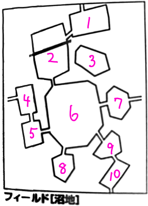
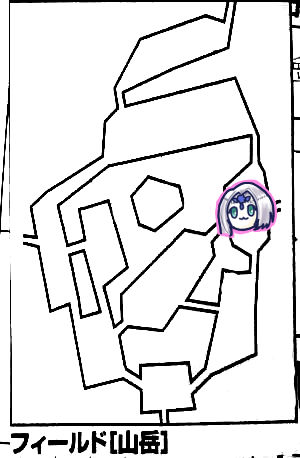
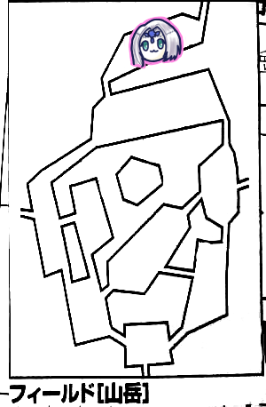
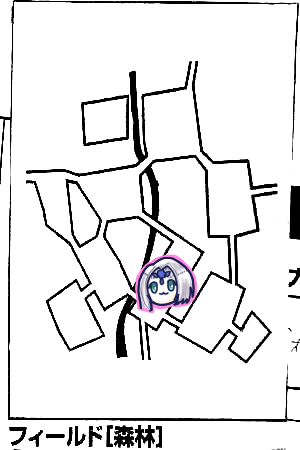
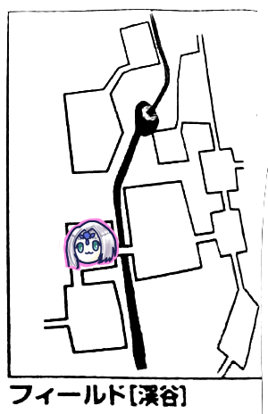
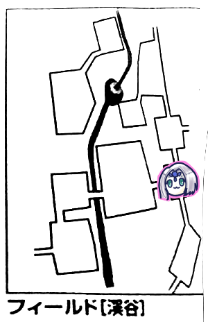

GM「はい、じゃ今回もやっていきましょう。まずは成長した結果とか教えてね」
ブルーローズ「あ、筋力+1されたから計算しなおさなきゃ」
GM「よりゴリラに」
みぞれ「これだけゴリラだと誤差でしょ」
ピーター「ゴリラの誤差」
ブルーローズ「もう常時異貌化してます」
みぞれ「調子に乗ってるから名誉取るのやめておけばよかったと思いました」
GM「ブルーローズの主張の強さは歌の件でよく分かっております」
ブルーローズ「名誉点で歌取得してよかった」
上記の通り、街だろうが外だろうが異貌化しっぱなしの主に危機感を抱いたみぞれは名誉点を支払ってブルーローズの名誉を獲得しました。とりあえず今回の活動範囲であるセズウィック村やルキスラ及び周辺地域であれば差別を受けないようになりました。これはバルバロステイルズの蛮族の地位を名誉点で支払うルール準拠で、一応蛮族ではないので範囲を地域ごと適用してもらった感じになります。
これをいつ取得したのか記録に残っていなかったのですが、9/21にキャラシーを作った時点でブルーローズがセッション外で「みぞれの名誉アイテム欄に『ブルーローズの名誉』ってあって目頭が熱くなりますな」と発言しているので、少なくとも前回終了時には獲得済だったようです。
リプレイ書くまでに1年とか間を開けている弊害。
GM「さて、今回はどうしましょう」
「そろそろラスト遺跡を探しに行きたいね」
「エッダですね」
GM「場所の目処はついていますか」
みぞれ「えーっと、オボロンが渓谷、ウルトゥケが台地、アルテーが山岳、イラボスが湖畔にありました。残りは荒れ地か森林か沼地」
沼地が探索しきってなかった気がするので行ってみようかということになりました。
みぞれ「ところでマップ左上のフィールドの情報ってシドに聞けますか？」
GM「存在しないエリアです。今は」
「今は？」
現在受けられるミッション：
・ヒドラの討伐
・魔物の討伐(地域別、繰り返し可)
・新米騎士の訓練(地域別、繰り返し可)
・マギテック協会の運搬用魔導機械の実験
・ライダーズギルドの釣り
・ハロルドの配達(繰り返し可)
・エッダの探索
みぞれ「台地に蛮族を倒しにいくってのは？」
GM「それはクエストですね」
「そういえばマギテック協会って行ったことないんじゃない？この実験てなに？」
GM「マギテック協会の長はジョエル・ブロンダン、タビットですね。クエストは推奨レベル3からで、討伐や新米騎士みたいにランダムで地域が指定されて、マギテック協会が開発中の運搬機械『はこぶくん』の護衛をするというものです。なお機械のレベルは君たちのレベルに関わらずHP15です。達成すると村のパラメータは上がりますよ。あとはこぶくんが性能アップしていきます。はこぶ君Z、陸戦型はこぶ君などになるんですね」
ナナシ「新米騎士に比べて機械が自己主張するかわからないけど我々殲滅力上がってるから何レベルでも構わない気がする」
GM「さすが」
みぞれ「リプレイ漁ってきたけど、ドマさんが沼地の北の方にある岩山の勇猛なる遺跡を探しているとか言ってた」
「お、じゃあ目的地は沼地で合ってるな」
というわけで遺跡探索ミッションを受けて沼地へ行くことになりました。
ナナシ「台地から回りませんか、ベラドンナ倒したい」
「ベラドンナLV14ありますが大丈夫ですか？」
GM「村長が興奮しながら『これさえ見つければエターナルへ到れる、頼んだぞ』と言っています」

みぞれ「GM、確認したいんですが、沼地の北の方にあるエリアは他より高くなってるんですよね？」
GM「はい、#1、#2、#3が高くなっています。一番高いのは3で段違いで高くなってます。2の上側は10mぐらいの段差になっています」
ナナシ「買い物今できますか、保存食買っておきたい」
みぞれ「ぱぱー魔香草かってー5個ぐらい」
ナナシ「10個ぐらい買っちゃえば」
GM「高レベルパーティーの会話だなー、魔香水とか買っちゃえば」
みぞれ「そういやハロルドさんが特製魔香水売ってなかったっけ？」
結局山岳→森林→渓谷と回り込んで北側から沼地へ行くことになりました。

山岳イベントで崖崩れが発生しました。ダメージ25点。
ピーター「ギリギリ生きてる」
ナナシ「これ必中ですか」
GM「必中です、初めてですねこのイベント」
みぞれ「あれ崖崩れって今までも遭遇したことなかったっけ」
GM「必中な崖崩れが初めてなんです」
タッシュ「防護点引けるんだっけ、えーと」
GM「9点引けるのかあんた」
ナナシ「うぃすぱーひーる」
ピーター「欲しいの？じゃMP払ってと」
GM「ささやく」
ピーター「囁いてるのは妖精では」
ブルーローズ「ウィスパーヒールの後にビビッド歌うわっ！」
ナナシ「ウィスパーヒール消費2点なの？」
ピーター「マナセーブで1点、MP軽減で1点」
ナナシ「やばい」
ピーター「もっかい撃っときます？撃っとくか。ウィスパーウィスパー♪」
ブルーローズ「びびびー」

みぞれ「イベント1です。へいわ」

タッシュ「イベント4です」
GM「山岳イベントです」
タッシュ「3です」
GM「漁師イベントです」
タッシュ「うわ。6」
GM「魔物に襲われたものと思われる亡骸を見つけました」
みぞれ「レクイエムを歌いそうな人が今離席中だった。調べるってできるんだっけ、探索判定？」
GM「宣言だけでいいです。遺品があります。1d6どうぞ」
みぞれ「6」
GM「ルキスラの住人のもののようです」

ピーター「イベント4です」
GM「山岳イベントです」
ピーター「4です」
GM「2が出ると必中です」
ピーター「いやー」
GM「細い崖道を進んでください」
ピーター「豆の木を使わせてください」
GM「OKです、目標値クリティカル」
みぞれ「むり」
GM「嘘です21です」
ピーター「MP1点減らして豆の木を使います」
GM「自由行動できなくなりますが判定なしで移動できます」

ナナシ「イベント1です」
みぞれ「今日平和だなー」
ピーター「へいわへいわ」
GM「木こりたちの集落です」
みぞれ「特にすることにないよね、お届け物とか遺品とかないよね」
ナナシ「ないすね」
「今日移動サクサクだね」
ココフォリアにナンバリングされた地図を並べたので移動がしやすくなりました。ビバ文明の利器。

みぞれ「イベント5です」
GM「森林イベントです」
みぞれ「3です」
GM「危険感知判定どうぞ。目標値は…あっ1ゾロ。11です」
タッシュ「10です」
GM「惜しい」
タッシュ「10なんで相当頑張ってるよ、いやーフィールドワーク苦手だわー」
GM「失敗したタッシュとブルーローズはちくっとします。タッシュ先生は毒効かないのでブルーローズは生命抵抗判定をお願いします」
みぞれ「タッシュ先生フィールドワークできなくて問題ないじゃん」
タッシュ「訓練の必要がなかったかもしれない」
ブルーローズ「はいっ[5,6]」
GM「抵抗できました」
タッシュ「少量の毒は排出可能。ジョジョみたいだな」

GM「ここは陽の光が遮られていて暗いです」
タッシュ「光ります。ぺかー。イベント3です」
GM「濃霧イベントです。霧が出てきました」
「ノーム？」
GM「濃霧。濃い霧」
「そっちか。ピーターがやっほーっていう流れかと思った」
GM「有効時間1d6=5時間です」
タッシュ「ふぅ」
GM「めっちゃ濃い霧です」
タッシュ「欲を出しすぎた」
GM「モンスターが出やすくなります」

ピーター「イベント3です」
GM「森林イベントです」
ピーター「2です」
GM「目標21で危険感知判定どうぞ」
みぞれ「値がおかしい」
GM「クリティカルしてるもん。茨が絡みついて君たちの血を吸う！タッシュ先生は吸う血がないのでぺっと吐き出されます。7点の魔法ダメージです。毒とか吸血とか森でのタッシュ先生は強いよね」
ピーター「ウィスパーヒールしときます、一応ね」

GM「セズウィック村を出て5日目」
みぞれ「あれそんなに？」
GM「フィールド内で1日経つので。そう言えば処理してなかったわ」
みぞれ「フィールド内でどのタイミングで食料減らすんですかね」
ブルーローズ「フィールドに入った瞬間に2食分減らすってことかしら」
GM「簡潔にするためにはそれがいいかもね」
タッシュ「日数制限あるやつ辛いじゃない？隣接してないと」
ブルーローズ「イベント6…うわあああああああああああああ」
GM「霧関係なくモンスターを出していただけましたので戦闘に入ります。馬に乗った頭部がドクロの騎士が2人と青白い光で発光する女性が1人です」
ボーンナイトとバンシーでした。
ナナシ「バンシーやべーんだわ」
GM「バルバロステイルズ使ってますんでバンシー深智魔法9レベル使えます」
先制取りました。
ナナシ「ちゃんうさは前でいいんだっけ？」
ピーター「前でいいです」
ピーター「モーラー使います。MP14点払います。目標はバンシーです。貫通なんで他の2体も巻き込まれます」
GM「鷹の目、射程OK？」
ピーター「OKです。24」
GM「モーラーってどこにある？俺もデータ見たいんですけど」
ピーター「ファイアモーラーです」
GM「あっそういうことか。バンシー抵抗失敗。貫通って部位ごとでしたっけ」
ピーター「部位ごとって書いてあります」
GM「巻き込まれるか判定します。馬だけ避けました。本体はどっちも抵抗失敗しました」
ピーター「へーい！そんないかない、26点ダメージです」
GM「26点でそんないかないって狂ってるよな」
ナナシ「外典入ってる？」
ピーター「あ入ってない！入れてください、28点です」
タッシュ「これ2.0のルールだとまだ接敵してないから乱戦になってないですよね」
GM「なってないね、さっきもいらなかった」
タッシュ「そうするとタッシュの選択は簡単だな。ライトニング」
GM「スリーウェイライトニング！？」
ナナシ「それだいぶ外道じゃないですか」
GM「同じ効果は重複しないけどね」
タッシュ「ナイトとバンシー2体を目標にして撃ちます」
GM「ナイトの目標は」
タッシュ「本体」
GM「こっちも撃ちたかったんだよねスリーウェイライトニング」
タッシュ「20」
GM「バンシー、ナイト本体は抵抗失敗」
ナナシ「これMP12？もっと食いませんか」
タッシュ「あ、スリーウェイライトニングの方。ウィザーズトゥームにスリーウェイライトニングってのがあるの。別にこれオリジナル必殺技とかじゃないから」
GM「めんどくさいから3d6振るね。全員巻き込まれました。で馬1だけ抵抗成功」
タッシュ「ひどい。12点ダメージ」
GM「やったぜ」
タッシュ「あごめんこれ知力分入ってない。4足してください」
みぞれ「脳死グレネードするか。23」
GM「たっけーな。これは容赦なく巻き込まれるので…全員抵抗失敗」
みぞれ「19点でーす」
GM「コア部位が倒れたのでボーンナイトは死去です」
みぞれ「後は任せたぞ」
ナナシ「挑発攻撃します。ファンブル。ファストアクションでバンシーに攻撃、23」
GM「17」
ナナシ「回った。23点」
GM「アーマー引いてちょっぴり残った」
みぞれ「残り5点だよ」
ブルーローズ「あとちょっとの時にブルーローズ当てるのもったいないかな」
GM「あとそいつしかいないから」
ブルーローズ「トンファー魔力撃でいいかな」
みぞれ「異貌化はしてるんだよね、常時してるんだっけ」
ブルーローズ「常時してます。19」
GM「クリティカル」
ブルーローズ「ええー！？追加攻撃します、25」
GM「15」
ブルーローズ「回った！38点」
みぞれ「なぜそんなオーバーキルを」
ブルーローズ「スリーウェイライトニングが怖かったので」

ナナシ「イベント5です」
GM「渓谷イベントです」
ナナシ「2です」
GM「おいしそうな匂いがします。色とりどりの美しい果物がなっています。17で精神抵抗どうぞ」
全員抵抗しました。

みぞれ「イベント3です」
GM「廃村イベントです」
みぞれ「渓谷イベントじゃないんだ？6」
GM「古い井戸があります。井戸の底まで10mです。登攀判定で-6ペナつきます」
みぞれ「登攀は…レンジャーはできないのか。できそうなのにな」
GM「できるよ、敏捷で…あ嘘言った」
タッシュ「ウォールウォーキングでいけるかな」
GM「これ30mいけるんだ。これなら判定なしでいけるよ」
タッシュ「行った先で調査が必要ならスキルがある人を行かせた方がいいね」
みぞれ「ナナシかな。これ触らなくてもかかるんだっけ」
GM「射程30mあるので井戸の底で切れてもかけなおせます」
ピーター「井戸の底に落ちた人を助けられる！」
タッシュ「ナナシにかけました」
GM「じゃあナナシがすたすたと井戸の底におります。降りたナナシさん、井戸の底イベント表を振ってください」
ナナシ「4」
GM「夜目は効きますか？」
ナナシ「暗視あります」
GM「罠感知判定21をお願いします」
ナナシ「18」
GM「赤い色をした石を踏みつけました。井戸の底から炎の柱がどーんと立ちました」
ブルーローズ「上で見てた人たちの前髪焦げますね」
GM「19点炎属性ダメージです」
ナナシ「くそ！俺がドワーフだったら！」
「自分だけ失敗して自分だけダメージ受けずに仲間を巻き込むドワーフか」
GM「帰りどうする？」
タッシュ「打ち上げられたんじゃないんだ」
GM「翼も何もなくて10mって死ぬんじゃないかな」
タッシュ「このまま上ってこいってのはひどすぎるんでウォールウォーキングかけます。発動」
GM「無事に帰ってきました」
ナナシ「丸焦げになったナナシが…井戸の底は…熱かったぜ…」
ブルーローズ「随分と余裕がありそうだね」
タッシュ「このパーティーナナシ以外全員回復手段持ってんだな」
ナナシ「ナナシもできますよ。リカバリィ持ってます」
タッシュ「すげえな」
ブルーローズ「キュアハートします。回復しました」
「待てナナシのMP減ってるぞ、触る場所間違ってる」
ナナシ「俺のMPが！」
タッシュ「お前のMPを使わせてもらう」
ブルーローズ「あんまり使う機会がないので間違えちゃった。あれ？これキュアハートのロールの計算合ってる？」
GM「筋力でキュアハートしちゃダメですよ」
みぞれ「脳筋プリースト」
ナナシ「心臓マッサージみたい」

タッシュ「イベント1です」
ブルーローズ「びびびびっびっびーびびびっびっ」
ナナシ「呪歌って適当なんだね」
GM「紅蓮のビビッド」
ブルーローズ「呪歌っていうのは心で歌うものなのよ」
みぞれ「心臓は捧げませんよ」

イベントロールの記載し忘れてますが多分平和だったんだと思います。
みぞれ「最近遺跡見つからないね」
ブルーローズ「そう見つかるものでもないです」
GM「フィールド移動になります。8食分減らしてください」
「なんか食料じゃなくてナナシのカード残数が減ってない？」
GM「カード食べた？」
GM「沼地に足を踏み入れました。地面は黒ずんで湿気を帯びています。ジェネラル移動を決めたいのでブルーローズ振ってください」
ブルーローズ「2。沼地のジェネラル移動はタッシュ先生じゃないの？」
みぞれ「実際前はそうしてましたね」
GM「じゃあそうしよう」
ブルーローズ「ジェネラルもタッシュ先生に会いたいよねー」
ブルーローズ「イベントは4です」
GM「沼地イベントです」
ブルーローズ「一体どんな楽しいハプニングが…ろーくー！」
GM「君たちは深い沼を進んでいきます。かなり深い部分もあったので全員7割方泥だらけになりました。この泥は特別でどろどろしています。しかもなかなか離れません。次の6時を超えるまで防護+1になります」
みぞれ「つまり汚くなったけど固くなった？これなんかデメリットないですか」
GM「ないです」
ピーター「メンタルはやられてるかもしれない」
ころころ。
GM「お前ら無言で探索するな」
無言で振りました。
GM「木の実を1d6=3個見つけました。青紫色をしたひし形の実です。見識判定できますよ」
ピーター「しまーす。21」
GM「知名度9、ラプロアの実です。幻と言われるほどおいしい実、特別な効果はないです」
ナナシ「おいしいって書いてある」
GM「さて、移動どうしましょう」
みぞれ「現時点でどこに行けますか」
GM「#2にいけます」
みぞれ「行けるんだ」
ナナシ「#3は登攀とかできそうですか」
GM「できなさそうです。ここには判定も何もありません」
ナナシ「じゃ#2行くか」

GM「イベント振ってください」
みぞれ「あれジェネラル移動1時間ごとに振るんじゃなかったっけ」
GM「一定範囲内に限るんです。ニュータイプみたいに」
タッシュ「今はジェネラルの圧を感じないんだ」
みぞれ「これ感知されないなら北側から来て正解だったかもね」
ピーター「確かに」
ナナシ「イベント5です」
GM「沼地イベントです」
ナナシ「1です」
GM「危険感知判定、目標12でどうぞ」
ころころ。
GM「ブルーローズとタッシュが沼に落ちました。ここはどろつく沼です。どろどろしたものが身体に張り付きます。全身糊を浴びたようになります。次の6時を超えるまで命中判定と回避判定に1ペナが付きます」
ピーター「タッシュ先生はともかくブルーローズがやばいですね」
このエリアは半分から北側が高くなっています。以前南側から北側へ移動しようとしたらゴーレムに金貨を要求された場所です。
GM「手前にゴーレムがおります」
みぞれ「ゴーレムは降ろしてくれそうな感じですかね」
GM「魔法文明語で何か言ってきます」
タッシュ「金貨、金貨、人数分って言ってる」
GM「下に降りようとすると壁がうあーと伸びてきますよ」
ブルーローズ「ここから#3には行けそうな感じですか」
GM「行けそうな感じじゃないです」
ナナシ「イラボスの金貨5枚払うね」
エリアの南側に移動しました。システム上時間経過はしません。
GM「で、調べるんですよね、探索判定してください」
全員成功しました。
みぞれ「あこれ私の出目(12)でも成功なんだ」
GM「人が通れそうな亀裂を見つけました。清涼な感じのする心地よい風が吹いてくるのが分かります。移動しますか」
みぞれ「行くしかねえ」
GM「大きな岩山の間を上って通ると岩山の盆地に出ました。外からはわからなかったが火山の火口みたいになっています」
GM「ここは周りが崖に囲まれていて上から光が指しています。緑の木々が生い茂り花々が咲き乱れています。沼地の中の楽園と言ってもいいでしょう。ではイベントどうぞ」
みぞれ「3です」
GM「本来は瘴気イベントが起こるはずですがここでは起きません」
ピーター「あ、神殿壊したから」
GM「いえ、ここが清浄な地だからです」
みぞれ「実質1ですか」
GM「実質1扱いです」
ナナシ「さあ、エッダを」
みぞれ「歌うんだブルーローズ」
ブルーローズ「持ち歌を？」
ナナシ「うん。…いやいや」
ブルーローズ「えっだーーーーー」
ブルーローズ「エッダ11です」
GM「なんとか成功しました。突如として旋風が巻き起こり、花びらが舞い上がる。視界を覆い、視界が晴れた後に巨大な都市が出現しました。ここエラッタで、ウルトゥケが出現すると書かれているんですよね。エッダです。年には高く堅牢な城壁がそびえ立っており、石造りの大小の道が複雑に絡んでいます。侵入者対策と思われます」
GM「ではエターナル5つ目の都市、エッダの遺跡の探索になります！」
エッダの遺跡～深度0
急いで探索して深度+6。
エッダの遺跡～深度6
急いで探索して深度+10。
エッダの遺跡～深度16
普通に進んで深度+4。
エッダの遺跡～深度20
GM「みんな！2d6全員振って！低いやつ2人が選ばれます」
「何に選ばれたんだ」
GM「はい、タッシュ＆ナナシが選ばれました。選ばれた人、罠感知判定お願いします。深度が今20だから難しさはー…目標値19で」
タッシュ「お、クリティカル」
ナナシ「20」
タッシュ「19って聞いた時点で諦めたんだけど」
GM「15mのピットつきの穴がありました。気づいてよかったですね」
タッシュ「落下ダメージ+スパイク？殺る気満々だね」
普通に進んで深度+2。
エッダの遺跡～深度22
GM「ここは…1d6振ってください。…何もありませんでした」
みぞれ「他の遺跡だと4で魔物が出たりしてましたねこの階層」
普通に進む、深度+3。
エッダの遺跡～深度25
GM「打ち捨てられた神殿です。ザイアの神殿ですね」
ピーター「お？ブルーローズの」
GM「神殿の中は礼拝堂になっていてザイアの神像が安置されています。礼拝堂には5つの瞳を持つ紋章が刻まれています。そこには老人の顔、身体はライオン、サソリの尻尾を持つモンスターがいました。彼はゆっくりと身体を起こして魔法文明語で語りかけてきました」
タッシュ「魔法文明語喋れます」
GM「『お主、刻印を求める者か』と言ってます」
ブルーローズ「なんて言ってますの？」
タッシュ「一応訳しながら…やるしかないんですか？」
GM「『刻印を欲するならば』。足元の刻印が2回光りました」
タッシュ「本当にやりますかの確認」
みぞれ「煽りかな？」
タッシュ「仕方ないのでやりましょう」
GM「では戦闘です！美しい人型のモンスターが3体、目の前のモンスターと同じものがもう1体出現しました」
ピーター「魔物知識判定します。人型の方から。成功」
GM「弱点も抜きました。LV3ハルピュイアです」
みぞれ「…あれ？」
タッシュ「もしかしてこれ固定レベル？」
GM「はい」
ナナシ「かわいそうすぎるでしょ」
ピーター「もう片方も成功」
GM「LV6レッサーマンティコアです」
みぞれ「レッサーだった」
タッシュ「ノーマルいるの」
みぞれ「次はLV12のエルダーマンティコアだった」
GM「マンティコアは中間がいないんですね。さあ、刻印を求めるならばかかってこい」
タッシュ「ｱｯﾊｲ」
ブルーローズ「この者たちはザイアの神殿を守るためにいるのです。ならば全力で叩き潰すまで」
ピーター「とりあえずファイアストームを前衛ハルピュイアに打ち込みますか？」
みぞれ「かわいそうｗｗｗ」
ピーター「あ、低い、18」
GM「それでもクリティカルしか避けられないんだよな…全員抵抗失敗」
ピーター「外典も入れます。回った、40点」
GM「さようならハルピュイア。ここは有名なセリフを言うべき？閣下、これは戦闘とは呼べませんな」
レッサー「うむ、これは素晴らしい力だ。刻印を持つにふさわしい。だがまだ我々がいる」
「いやなんかかわいそうなハルピュイアとかいう名前になってるんだけどｗ」
タッシュ「この機会に殴りに行きます。前進してかけらなしの方を。14」
GM「やる気のマンティコア！12です」
タッシュ「回ってる、26点です」
ナナシ「ナナシここで敢えてチアしていいですか」
タッシュ「待て待て待て、魔法飛んでくるんだからね？後ろに飛んでくことは覚えておいてね？」
ブルーローズ「あっ、足をくじいてしまいましたわ！？」
タッシュ「棒読みだー！大丈夫？こいつファイアーボールとかライトニングとか打てるよ？」
ナナシ「ナナシさんだけは助けに行ってあげようかな」
ブルーローズ「じゃあみんな前進したところでフォースエクスプロージョンを叩き込む」
タッシュ「鬼」
ナナシ「バフ入れて傷ついてる方を攻撃します。クリティカルレイ切ります。19」
GM「お、ワンチャンあるぞ。14」
ナナシ「回れい」
みぞれ「すげー回った」
ナナシ「3回転。39点です」
マンティコア「うむ、見事である(消滅)」
ナナシ「ついでにカケラ入ってる方のコア部位狙います。24」
GM「17」
ナナシ「25点です」
GM「ブルーローズ行きますか、異貌化して前進してフォースエクスプロージョンですね」
ブルーローズ「タッシュ先生に刃は向けられませんわ」
ナナシ「俺は？」
ブルーローズ「異貌化して近づきます」
みぞれ「常時異貌化してるんじゃなかったっけ」
ブルーローズ「してます。トンファー魔力撃で。えい！23」
GM「18。無理です。出目はいいんだけどね！」
ブルーローズ「34点、追撃！19」
GM「わんちゃんねこちゃん！100！あ、そんな数値はない！出目的には避けてたのに！振り直し、18！あっいちたりない！」
ブルーローズ「30点です」
GM「見事だ…と言って消えます」
ブルーローズ「悲しい戦いだったわ」
ナナシ「そうか？」
GM「魔法文明語で刻印を望みますか？と頭の中で声が聴こえます」
タッシュ「望みます」
GM「君たちの右腕に目のアザが刻まれました」
みぞれ「さくさくやったな」
ブルーローズ「探索慣れしたんだよ」
GM「ミッション達成となるのでここで村に帰ると宣言することができます」
ブルーローズ「制限時間いっぱいまで行きましょう」
ナナシ「武器サビサビの刑」
みぞれ「あったなそんなん」
ナナシ「まあそうそうないやろ」
みぞれ「フラグ建てるのやめていただけます？」
GM「では進みますか。あっ剥ぎ取り忘れてた」
みぞれ「かけらかけら」
普通に進んで深度+4。
エッダの遺跡～深度29
GM「1d6をお願いします」
誰が振ったか記録に残ってませんが2でした。
GM「エッダの指輪が見つかりました」
ナナシ「ご当地アクセサリー」
GM「これを装備すると探索判定に+1されます」
普通に進んで深度+2。
エッダの遺跡～深度31
GM「ここには鉄くずの山があります。見識判定どうぞ」
ピーター「成功しました」
GM「エッダの金貨1d6枚を手に入れました」
ピーター「3枚！」
普通に進んで深度+3。
エッダの遺跡～深度34
GM「都の中心にある高台に城塞があります。そこには幻獣の姿が見えます」
ピーター「姿が見えたなら魔物知識判定できますか」
GM「できます」
ピーター「へーい！ファンブル」
タッシュ「すごいいい流れだったのに」
GM「ライダー技能で判定できるよ」
みぞれ「14です」
GM「3レベルモンスターディーラです。こいつの厄介な点は、魅了の歌の抵抗に失敗すると操られることですね。それが全部で20体ぐらいいます」
ナナシ「魔法文明語で話しかけてみるか」
みぞれ「こいつの言語、エルフ語と魔法文明語って書いてある」
ブルーローズ「わたくしエルフ語なら少し嗜んでおりまして」
ピーター「なんか言ってみる？」
ブルーローズ「やっほー！」
ディーラ「おお！人だ！これって人ってやつだ！初めて見た！」
ディーラ「ニンゲン！ニンゲン！珍しいなあ！」
ディーラ「書物がたくさん読みたいんだ！持ってないか！？」
ブルーローズ「ここにわたくしの書いた戯曲ならあるんですがどうですか？布教用に3冊は持ち歩いているのですが」
ナナシ「魔法文明の本ってやつならあるんだけど」
ブルーローズ「それと一緒に戯曲も1冊」
GM「ディーラは魔法文明の本を受け取ります」
ディーラ「よくある系のやつだね、でもこれ持ってないやつだ、よかったら金貨と交換してくれない？2枚出すよ」
ナナシ「2冊持ってるんだけどどっちも交換してくれる？」
GM「してもらえます」
ナナシ「じゃ交換するか」
ディーラ「戯曲の方はなんて書いてあるかわからないな」
GM「トランペットが鳴り響いて新たなディーラが飛んできました」
新しく来たディーラ「これは楽譜ってやつだよ！」
ブルーローズ「まあ！話の分かりそうな！」
ディーラ「でも魔曲みたいな力はない曲だからなあ」
ブルーローズ「でも想いはこもっておりますわよ！」
ナナシ「バーサーカーみたいな奴だな」
ディーラ「この曲を書いたのはあなた？」
ブルーローズ「私ですわ！」
GM「金貨1枚と交換してもらえました」
みぞれ「布教されてしまった」
GM「なんだろう、これ、全都市でやる？」
みぞれ「旅の目的がよくわからなくなってきたな」
GM「新しく来たディーラはバラの意匠の施された黄金のトランペットを下げています」
ブルーローズ「ステキなトランペットをお持ちですわね」
ディーラ「楽器に興味あるんだ？」
ブルーローズ「ええそれはもう！」
ディーラ「売ってあげようか？」
ブルーローズ「でもお高いんでしょう？」
ディーラ「金貨50枚でどう？」
ブルーローズ「もっとお安くなりませんか？」
ディーラ「金貨50枚に相当する書物でもいいよ？」
ピーター「ちなみに外典はどうですか？」
ディーラ「うわ、それは全然知らない本だ、金貨120枚でどう？」
ピーター「うーん、でも+2を失うのはきつい」
ブルーローズ「ビビッドの楽譜はどうでしょう？」
ディーラ「こんなありふれたものはつまんないよー」
結局「自分のことを歌にするのは並の神経じゃできない」ということで戯曲にお金払ってもらったみたいです。
「高度な研究資料だな」
ナナシ「村長がしたためてるんだよ」
みぞれ「ちなみにねぇイラボスに図書館あったんだよね、何冊かかっぱらってくればよかったね」
GM「何か繋がりがあるかもしれませんね」
で、このトランペットってこれで入手できてるんですかね？何も書いてなかった。
普通に進んで深度+6。
エッダの遺跡～深度40
GM「皆様2d6振ってください。一番低い2人が選ばれます」
ブルーローズ確定、ナナシとみぞれとピーターで決定戦が実施され、ナナシが選ばれました。
GM「では26を目標に罠感知判定をお願いします」
「たっか」
失敗しました。
GM「では2人は何かを踏みました。かちっと音がして。小さな石が赤く光りだします」
ナナシ「こ、これは」
GM「16点の炎属性ダメージをくらいます。ナナシは今日よく燃えるね」
ナナシ「炎上しますねー」
回復して普通に進みます。深度+1。
ナナシ「あっ」
みぞれ「あっ」
GM「お気づきになられましたか」
エッダの遺跡～深度41
GM「そうです、遺跡は2階層ごとにイベントが切り替わるのです。さあ、みなさん2d6を握りしめて」
ナナシ「うわーーーーー(1ゾロ)」
GM「ナナシ今日巻き込まれるね」
ブルーローズ「今日罠づいてるね」
失敗しました。
GM「はい、爆発します、12点ダメージ」
ナナシ「ふっ、ぬるいな」
ブルーローズ「ストロングブラッドしながら歩いたほうがいいんじゃないの」
再度回復して普通に進みます。深度+4。
エッダの遺跡～深度45
GM「瓦礫やガラクタなどがある部屋です。精神抵抗を23目標でお願いします」
ピーターだけ成功しました。
GM「足元に魔法陣がありそれが光りました。1d6どうぞ」
ナナシに魔法ダメージ9点。
ブルーローズ、タッシュ、みぞれにMPダメージ6点。
GM「これで時間いっぱいです。花びらが視界を覆い、気がつくと外にいました」
「しゃーない、村に戻りますか」
セズウィック村
みぞれ「村長に報告かな」
村長「とうとう5つ目の…！これでエターナルへ…！」
GM「ローレンスは興奮が隠しきれないようです」
GM「では精算をしましょう。今回倒したモンスターは8体、少ないなー！★6個を足して合計1680の経験値になります。そして名声値が+5されます」
ピーター「また名声値かー。62っと」
GM「今合計いくつです？」
ピーター「88です」
GM「大きな街になってますね、発展レベルは5、500を超える建物が建ち並び、人口は3千人程度…すいませんこれ93になったらの話だ」
「もう村とは呼べないのでは」
タッシュ「これでエターナル行ってきますってなった時に村長ついてくるのかな」
GM「来ないです」
タッシュ「これで護衛任務が発生しちゃうかと思った」
GM「さて、これでグランドエンディングを見る条件が整いました」
「エターナルの入口って山岳を3エリア移動するだけだから行っちゃうか」
「あれ夜にならないとダメなんじゃなかったっけ」
「これ、夜にするのにイベントめっちゃ振らなきゃいけない？」
GM「刻印あるのでその辺は飛ばせます」
というわけでEDを見に行くことになりました。
GM「というわけでエターナルへ続く道へ戻ってきました。長かったですね。全高20mの扉が光っています。扉をくぐりピラミッドの階段を上っていきます。上りきったところの足元に広大な海原があり、穏やかな微笑みを浮かべた女性の水先案内人がいました」
案内人「資格は揃いましたでしょうか」
刻印を見せるパーティー。
案内人「あなたをエターナルへと至る者へと認定します」
GM「海原が沈下していきます。水が干上がり、高く堅牢な城壁を伴う巨大な都市遺跡が現れました」
案内人「エターナルへの扉はシティの中にあります。シティには侵入者を撃退する仕掛けがあり、扉は6つの石版によって封じられています。幸運を祈ります」
ブルーローズ「俺たちはエターナルへの扉を見つけた！第一部完！僕たちの冒険はこれからだ！」
GM「これでマップ左上のブロックに遺跡という新たなフィールドが追加されます。遺跡の場所が思いの外近くてローレンスがびっくりしています。都市遺跡の発見により、村を発展させる計画が新たな段階に入りました」
「世界樹の迷宮かな？」
GM「永遠の帝国エターナルの発見者である君たちには、エターナルを見出だせし者として名誉点が30点、全員に5万ガメルが支払われました」
GM「というわけでエターナルの発見、クリアおめでとうございます。ここで冒険を終えることもできますが、続けることもできます」
ナナシ「遺跡探索したいでーす」
タッシュ「これで後はおまかせします、はないよな」
ナナシ「遺跡を見つけて探検しないのは我々としては」
みぞれ「悠久の迷宮屋だからね」
ナナシ「散々遺跡見つけてきた末に発見したのが伝説の遺跡って熱いよね」
GM「冒険を続けると言うとローレンスが追加情報をくれます」
かつてローレンスの父ニコロはエターナルの資料を発見し、エターナルの魔法を研究していた。ローレンスはその研究を引き継ぎ、妻のユナと一緒に研究していた。
6年前、彼らはエターナルに至るための魔法装置を作った。
それは別の時間軸、別の世界にに行くことで永遠を勝ち取ることのできる装置で、エターナルの扉と呼ばれた。
しかしその実験中、事故が発生しユナは消えてしまった。
ローレンス「ということになっている。しかしあれが失敗だったとは思っていない、ユナはエターナルへと至ったのだ。彼女が消える直前に『見て、ローレンス、すごいわ、これがエターナル』と言ったのを聞いたんだ。しかしその後、それ以上の実験は禁止され、資料等も取り上げられてしまった。私はユナを取り戻したい。どうかエターナルの扉を見つけてほしい」
みぞれ「石版はその遺跡の中にあるんだ」
GM「エターナルシティの中にあります」
タッシュ「当分往復することになりますね」
みぞれ「めんどくさいな」
この温度差。
GM「次回からエターナルセカンドシーズンになります」
ブルーローズ「セズウィック村編、エターナル編」
ナナシ「1期で4年かー、2期で何年かかるんだろうなー」
GM「2期のEDは4つに分岐します」
ブルーローズ「もう神格化しちゃうまでやるか」
GM「推奨レベル14とかいうとんでもないミッションもありますので」
ナナシ「普通にアンデッドジェネラルも倒してないのにおめおめとEDを迎えられるわけがないじゃないですか」
タッシュ「これはプリーストとか取った方がいいのかな」